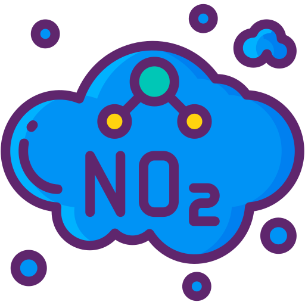

Introduction
On this dashboard, you can explore two main topics:
- Discover: Learn about the condition of local surface water in Marion County through interactive charts, maps, and fun activities.
- Understand: Find out why water quality is important for both the environment and your community.
Water quality is measured using data! Since the late 1990s, the Marion County Public Health Department (MCPHD) has been collecting samples from streams and rivers such as the White River, Eagle Creek, and Fall Creek. Their findings help identify if the water is safe for activities like swimming, fishing, or playing nearby and for consumption.
As of 2019, MCPHD monitors 51 sites across Marion County. At these sites, they measure factors called pollutants to see if the water is clean or needs improvements. These pollutants include bacteria, chemicals, and physical properties of the water. Areas with low pollutants are marked “Safe,” while high levels of pollutants mean it’s “Not Safe” to swim, play, or drink from the water.

Click to enlarge, or use Ctrl + click (⌘ + click on Mac) for more information on the Watershed Sampling Program
What is Measured?
They monitor these factors five times a month:
They also check quarterly for the concentration of these factors:
- 
What are the Challenges?
Urbanization in Marion County has created some challenges. As more buildings, roads, and neighborhoods are built, rainwater collects more pollution like oil, trash, and chemicals. This pollution flows into our rivers and streams, which can hurt the fish, plants, and even people who rely on the water.
But here’s the good news: scientists are studying these changes to figure out where the problems are coming from and how we can fix them. To understand the bigger picture, we need to learn about Marion County meaning where it is located, what its rivers and streams look like, and how the land around them impacts the water.
Ready to explore? Click Next to dive into the County Overview!